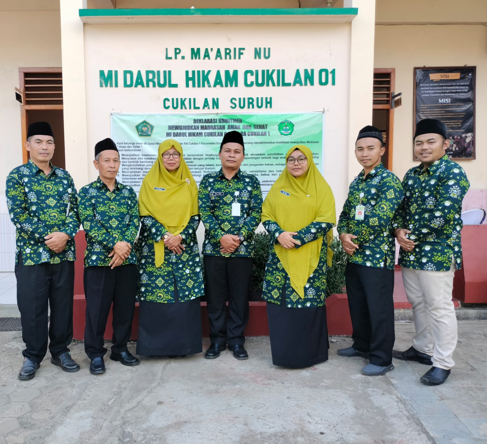

Selamat Datang di MI Darul Hikam Cukilan 01
Madrasah Ibtidaiyah Darul Hikam 01 di Desa Cukilan, Kecamatan Suruh.
Kenali Kami Baca BeritaBerita Terbaru
Lihat semua beritaProfil Sekolah
Sejarah Awal
Mula berdirinya MI Darul Hikam Cukilan 01 tidak ubahnya seperti lembaga pendidikan pada umumnya. Meski bukan lembaga pendidikan yang dananya selalu disubsidi oleh pemerintah, lambat laun sekolah ini menjadi pilihan favorit masyarakat Suruh.
Pada tahun 1947, atas inisiatif para tokoh masyarakat yang terdiri dari unsur pemuka agama, pemerintah, dan tokoh masyarakat, berdirilah sebuah lembaga pendidikan di Krajan II Desa Cukilan dengan nama Sekolah Rakyat. Lembaga ini yang pertama kali berdiri di Desa Cukilan dengan nuansa pendidikan islami.
Pada tahun 1950 lembaga ini diubah menjadi MWB (Madrasah Wajib Belajar) berdasarkan piagam nomor 1/14/5685 dari Jawatan Pendidikan Agama Jakarta. Kemudian pada bulan Agustus 1958 berubah nama menjadi MI Darul Hikam sampai saat ini.
MI Darul Hikam Cukilan 01 dulunya hanya satu kelas (sekitar 20 anak) yang menumpang di beberapa rumah warga. Alhamdulillah, saat ini mencapai 181 siswa dan memiliki gedung sendiri. Pada awal berdirinya jumlah guru sebanyak 6 orang, dan saat ini menjadi 10 orang dengan jumlah santri yang setiap tahun selalu meningkat.
Letak Geografis
MI Darul Hikam Cukilan 01 merupakan lembaga di bawah naungan Kementerian Agama yang beralamatkan di Dusun Krajan II, Desa Cukilan, Kecamatan Suruh. Lokasinya sangat cocok untuk proses belajar mengajar karena berada di tengah pemukiman penduduk.
MI ini dibangun dengan pertimbangan tata letak yang memberikan kenyamanan untuk belajar. Ruang belajar agak jauh dari jalan raya sehingga kebisingan dari kendaraan dapat diminimalisir dan siswa tetap belajar dengan nyaman.
Batas-batas lokasi:
- Utara: sungai dan persawahan
- Barat: rumah warga
- Selatan: jalan raya
- Timur: rumah warga
Identitas Madrasah
| Nama Lembaga | MI Darul Hikam Cukilan 01 |
|---|---|
| Alamat | Dsn. Krajan II, Desa Cukilan |
| Kecamatan | Suruh |
| Kabupaten | Semarang |
| Provinsi | Jawa Tengah |
| Kode Pos | 50776 |
| No. Telepon | 085713359721 |
| Nama Yayasan | LPI Darul Hikam Cukilan |
| Status Sekolah | Swasta |
| No. SK Kelembagaan | 001/P.LPI.DH/I/2018 |
| NSM | 111233220053 |
| NIS / NPSN | 60712858 |
| Tahun Berdiri/Beroperasi | 1958 |
| Status Tanah | Wakaf |
| Luas Tanah | 1502 m² |
| Kepala Sekolah | Zumar Marfu'i, S.Pd.I |
| No. SK Kepala Sekolah | 001/P.01/LPI.DH/02/2020 |
| Masa Kerja Kepala Sekolah | 1 Tahun |
| Status Akreditasi | Terakreditasi A |
| No. SK Akreditasi | 138/BAP-SM/X/2014 |
Guru dan Tenaga Kependidikan

Visi
Sebagai lembaga pendidikan dasar berciri khas Islam, MI Darul Hikam Cukilan 01 merumuskan visi madrasah dengan mempertimbangkan harapan peserta didik, orang tua/wali, pemangku kepentingan (stakeholders), dan masyarakat. Selain itu, madrasah berkomitmen untuk beradaptasi dengan perkembangan ilmu pengetahuan, teknologi, serta dinamika globalisasi. Berdasarkan pertimbangan tersebut, MI Darul Hikam Cukilan 01 menetapkan visi sebagai berikut:
“Terwujudnya Generasi Islami yang Terampil Qira’ah, Berprestasi, Berakhlakul Karimah, dan Peduli Lingkungan.”
Misi
- Menumbuhkan penghayatan dan pengamalan seluruh warga madrasah terhadap ajaran agama Islam ala ahlussunah waljamaah.
- Melaksanakan program bimbingan tahsin dan tahfidz Alqur’an secara intensif.
- Melaksanakan pembelajaran profesional dan bermakna dengan pendekatan PAIKEM yang dapat menumbuh kembangkan potensi peserta didik secara maksimal.
- Melaksanakan pembelajaran ekstrakurikuler secara intensif sehingga setiap siswa memiliki keunggulan dan berkembang sesuai bakat dan minatnya.
- Melaksanakan pembelajaran yang ramah anak dengan menyelenggarakan pendidikan inklusif.
- Meningkatkan kualitas sumber daya manusia (pendidik dan tenaga kependidikan).
- Melaksanakan pengelolaan madrasah dengan manajemen partisipatif dengan melibatkan seluruh warga madrasah dan kelompok kepentingan.
Berita Terbaru
Berita tidak ditemukan.
Informasi Pendidikan
Pilih informasi yang ingin dibaca.
KMA Pedoman Pengangkatan Guru pada Madrasah yang Diselenggarakan oleh Masyarakat
Persyaratan umum dan peran guru pada madrasah yang diselenggarakan oleh masyarakat.
Baca selengkapnya →KMA Nomor 183 Tahun 2019 tentang Kurikulum PAI dan Bahasa Arab
Standar kurikulum Pendidikan Agama Islam dan Bahasa Arab pada madrasah.
Baca selengkapnya →KMA Pedoman Pengangkatan Guru pada Madrasah yang Diselenggarakan oleh Masyarakat
Guru merupakan pendidik profesional yang memiliki tugas utama untuk mendidik, mengajar, membimbing, mengarahkan, melatih, menilai, dan mengevaluasi peserta didik pada pendidikan usia dini melalui jalur formal, pendidikan dasar, dan pendidikan menengah.
Peran Guru
Selain memiliki tugas utama tersebut, guru juga menjalankan peran sebagai:
- motivator, yaitu orang yang memberikan motivasi dan semangat kepada peserta didik dalam belajar;
- teladan, yaitu orang yang memberi contoh dan teladan yang baik kepada peserta didik;
- administrator, yaitu orang yang mencatat perkembangan peserta didik; dan
- inspirator, yaitu orang yang menginspirasi peserta didik sehingga memiliki tujuan di masa depan.
Persyaratan Umum Calon Guru pada Madrasah yang Diselenggarakan oleh Masyarakat
- beragama Islam;
- mampu membaca Al Qur'an;
- memiliki wawasan keberagamaan yang moderat;
- berusia paling tinggi 45 (empat puluh lima) tahun;
- sehat jasmani dan rohani;
- tidak sedang menjalani hukuman pidana; dan
- tidak menjadi anggota organisasi yang terlarang.
KMA Nomor 183 Tahun 2019 tentang Kurikulum Pendidikan Agama Islam dan Bahasa Arab pada Madrasah
Menteri Agama menerbitkan Keputusan Menteri Agama (KMA) Nomor 183 Tahun 2019 sebagai standar kurikulum Pendidikan Agama Islam (PAI) dan Bahasa Arab pada madrasah. Kurikulum ini disusun agar madrasah mampu menjawab perubahan zaman akibat kemajuan ilmu pengetahuan, teknologi, dan komunikasi, sehingga lulusannya sesuai dengan tuntutan zaman dalam membangun peradaban bangsa.
Kurikulum ini menyiapkan peserta didik agar memahami prinsip-prinsip agama Islam (akidah akhlak, syariah, dan perkembangan budaya Islam), menginternalisasikan nilai agama dalam cara berpikir, bersikap, dan bertindak, serta mengekspresikannya secara bertanggung jawab, toleran, dan moderat dalam kerangka berbangsa dan bernegara berdasarkan Pancasila dan Undang-Undang Dasar 1945.
Tantangan Pengembangan Kurikulum
- Tantangan internal PAI: pembelajaran masih berfokus pada pengetahuan, belum menjadikan agama sebagai jalan hidup; serta munculnya pola beragama yang ekstrem-tekstualis maupun sekuler-liberalis.
- Tantangan internal Bahasa Arab: pembelajaran masih cenderung strukturalistik dan kurang komunikatif, padahal Bahasa Arab penting untuk memahami Al-Qur'an dan Hadis dari sumber aslinya.
- Tantangan eksternal PAI: menguatnya paham transnasional, kemajuan teknologi informasi, dan era disrupsi yang penuh ketidakpastian.
- Tantangan eksternal Bahasa Arab: perubahan Bahasa Arab yang cepat dan beragam, serta rendahnya minat generasi muda mempelajari agama dari sumber otentik.
Penyempurnaan Pola Pembelajaran
Pembelajaran diarahkan agar berpusat pada peserta didik, interaktif, berbasis jejaring dan multimedia, aktif-mencari dengan pendekatan saintifik, kolaboratif, kritis dan solutif, serta menjadikan nilai akhlak dan agama Islam yang moderat sebagai inspirasi dalam proses belajar.
Pilar Pengembangan Pendidikan Madrasah
- Keagamaan: nilai agama Islam menjiwai praktik pendidikan madrasah.
- Kebangsaan: pendidikan madrasah memperkuat Negara Kesatuan Republik Indonesia berdasarkan Pancasila, UUD 1945, dan Bhinneka Tunggal Ika.
- Kemandirian: pengelolaan madrasah bertumpu pada kekuatan dan kepercayaan diri sendiri.
- Keumatan: madrasah dekat dengan umat dan melayani kebutuhannya.
- Kemodernan: pengelolaan madrasah mengikuti perkembangan zaman dengan tetap menjaga tradisi yang baik.
Tujuan Pengembangan Kurikulum
- PAI: membentuk peserta didik yang memiliki pola pikir dan sikap keagamaan yang moderat, inklusif, berbudaya, dan religius, serta beriman, bertakwa, berakhlak mulia, produktif, kreatif, inovatif, dan kolaboratif.
- Bahasa Arab: membekali peserta didik dengan kemampuan menggunakan Bahasa Arab sebagai alat komunikasi global dan alat mendalami agama dari sumber otentik, yaitu Al-Qur'an dan Hadis.
Buku Digital Madrasah Ibtidaiyah Tahun 2020
Kumpulan buku digital Pendidikan Agama Islam dan Bahasa Arab untuk Madrasah Ibtidaiyah (MI) Tahun 2020. Pilih mata pelajaran dan kelas, lalu klik tombolnya untuk mengunduh buku.
Kontak
Hubungi kami untuk informasi pendaftaran dan layanan madrasah.
Alamat
Dsn. Krajan II, Desa Cukilan, Kec. Suruh, Kab. Semarang, Jawa Tengah 50776